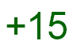
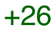

7.0
8 Crafter Katas
8.1 Air Crafter Kata (1 minutes)

Review/Introduce: core values
Extra Dollars for: lively discussion
Tip: This is a good kata to learn as a team or in small groups.
To earn this Kata  students should be able to recite
the amount of points they get from having a custom Crafter in their game.
Crafter points:
* Each crafter (max 5) - 1 point.
* Any crafter within 25 minutes (sprint bonus) - 5 points.
* For each crafting recipe (max 15) - 1 point.
* For each crafting matching the theme (max 15) - 1 point.
8.2 Bronze Crafter Kata (5 minutes)

To earn this Kata  students should be able to translate any sentence of this type:
Make a game that has an avatar and a crafter.
To corresponding code of this type:
8.3 Silver Crafter Kata (8 minutes)


To earn this Kata  students should be able to translate any sentence of this type:
students should be able to translate any sentence of this type:
Make a game that has an avatar, a crafter, a carrot, and one more
food item with a custom sprite, name, healing power.
To corresponding code of this type:
| #lang survival |
| (define (carrot-cake) |
| (custom-food #:sprite (rectangle 40 20 "solid" "brown") |
| #:name "Carrot Cake" |
| #:heals-by 25 |
| #:amount-in-world 1)) |
| (survival-game |
| #:avatar (custom-avatar) |
| #:food-list (list (custom-food #:amount-in-world 10) |
| (carrot-cake)) |
| #:crafter-list (list (custom-crafter))) |
8.4 Gold Crafter Kata (15 minutes)


Tip: The order of the keywords does not matter.
To earn this Kata  students should be able to translate any sentence of this type:
students should be able to translate any sentence of this type:
Make a game that has an avatar, a crafter, a carrot, and one more
food item with a custom sprite, name, healing power, a custom recipe,
and a crafter that uses this recipe.
To corresponding code of this type:
| #lang survival |
| (define (carrot-cake) |
| (custom-food #:sprite (rectangle 40 20 "solid" "brown") |
| #:name "Carrot Cake" |
| #:heals-by 25)) |
| (define carrot-cake-recipe |
| (recipe #:product (carrot-cake) |
| #:build-time 5 |
| #:ingredients (list "Carrot"))) |
| (define (my-oven) |
| (custom-crafter #:menu (crafting-menu-set! #:recipes carrot-cake-recipe))) |
| (survival-game |
| #:avatar (custom-avatar) |
| #:food-list (list (custom-food #:amount-in-world 10) |
| (carrot-cake)) |
| #:crafter-list (list (my-oven))) |
8.5 Platinum Crafter Kata (15 minutes)


Tip: There is no number of "required" katas by day.
To earn this Kata  students should be able to translate any sentence of this type:
students should be able to translate any sentence of this type:
Make a game that has an avatar, two food items with their two
recipes and a custom crafter that uses these recipes.
To corresponding code of this type:
| #lang survival |
| (define (carrot-cake) |
| (custom-food #:sprite (rectangle 40 20 "solid" "brown") |
| #:name "Carrot Cake" |
| #:heals-by 25)) |
| (define carrot-cake-recipe |
| (recipe #:product (carrot-cake) |
| #:build-time 5 |
| #:ingredients (list "Carrot"))) |
| (define (carrot-cupcake) |
| (custom-food #:sprite (square 10 "solid" "brown") |
| #:name "Carrot Cupcake" |
| #:heals-by 15)) |
| (define carrot-cupcake-recipe |
| (recipe #:product (carrot-cupcake) |
| #:build-time 10 |
| #:ingredients (list "Carrot Cake"))) |
| (define (my-oven) |
| (custom-crafter #:menu (crafting-menu-set! #:recipes carrot-cake-recipe |
| carrot-cupcake-recipe))) |
| (survival-game |
| #:avatar (custom-avatar) |
| #:food-list (list (custom-food #:amount-in-world 10) |
| (carrot-cake)) |
| #:crafter-list (list (my-oven))) |